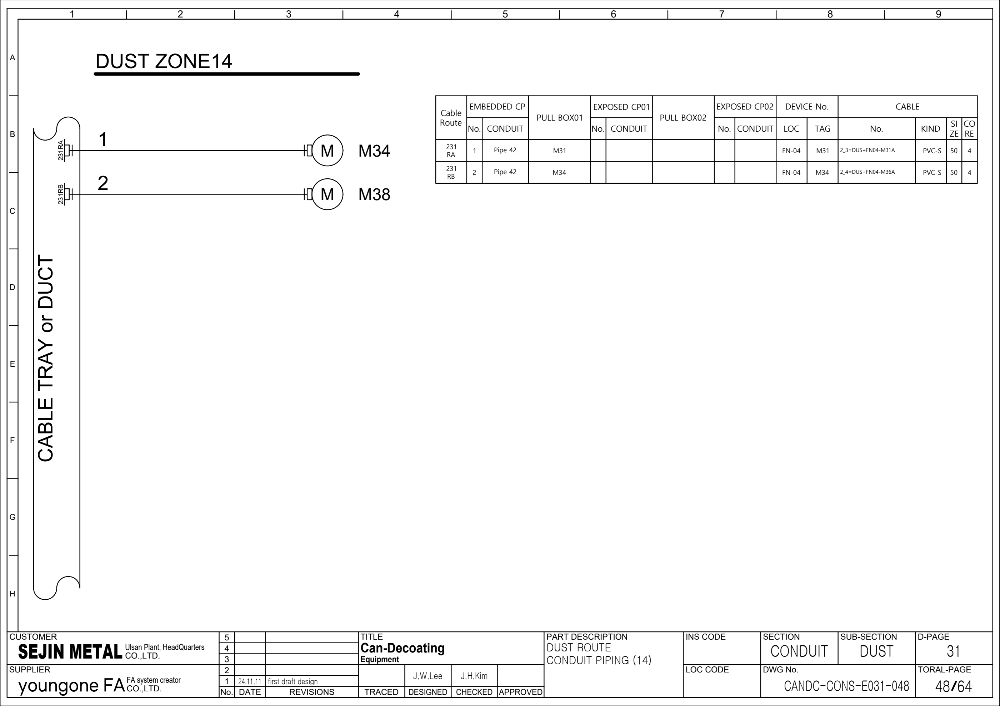

FN04 · 시공 배선·케이블 참조
64페이지 전기 시공도면을 기존 OEM Rev.2 회로도·PLC 백업의 보완 근거로 사용합니다. 표지 FOR APPROVAL, 개정란 24.11.11 first draft design. 승인·준공·실제 설치·현재 배선은 확인 전입니다. PLC 주소와 실제 단자 핀은 이 자료만으로 확정하지 않습니다.
추적 경계: M31·M36 두 동력 분기와 공통 인버터. PDF48의 혼재 표기는 C05 확인 대기입니다.
1. 관련 원본 페이지
새 시공도면 · PDF 4 · 새 시공도면 · PDF 6 · 새 시공도면 · PDF 48 · 새 시공도면 · PDF 52
아래 자료는 시각 확인한 선택 행입니다. 전체 케이블·단자·I/O 목록의 완성이나 현장 수리 완료를 뜻하지 않습니다.
2. 모터 동력 간선 · 선택 행
| 근거·행 | 케이블 식별자 | FROM → TO | 종류·규격 원문 | 경로·LEN 원문 / 검토 |
|---|---|---|---|---|
| 새 시공도면 · PDF 52 2_3 | =DUS+FN04-M31A | CR → FN-04 / M31 | DAC / PVC-S / 4 / 50SB SPARE 0 | 100 → 200 → 230 → 231 → RA → E100 · LEN 106 PDF48 모터 그림·TAG 표기의 혼재는 C05에서 확인 대기로 관리합니다. |
| 새 시공도면 · PDF 52 2_4 | =DUS+FN04-M36A | CR → FN-04 / M36 | DAC / PVC-S / 4 / 50SB SPARE 0 | 100 → 200 → 230 → 231 → RB → E100 · LEN 109 공통 인버터와 두 모터 분기를 구분합니다. M34·M38로 자동 치환하지 않습니다. |
3. 접속함·센서·밸브 · 선택 행
제어 케이블의 개별 행·단자 경로는 추가 검토가 필요합니다. 관련 PDF와 OEM 회로도를 함께 확인합니다.
4. 새 시공도면의 확인 대기
| 검토·근거 | 도면 관찰 | 영향 | 확인 작업·상태 |
|---|---|---|---|
| C05 / FN04 새 시공도면 · PDF 48 · 새 시공도면 · PDF 52 2_3, 2_4 | PDF48 DUST14의 모터 그림은 M34/M38, 표의 TAG는 M31/M34, 케이블 접미사·PDF52 TO는 M31/M36입니다. | FN04 두 분기를 SC10 M34·VR04 M38과 잘못 병합할 수 있습니다. | OEM FG59의 M31/M36, 배치도, 양단 표찰·모터 명판을 별도로 대조합니다. PDF48 표기를 현장 ID로 채택하지 않습니다. 확인 대기 · 현장 미확인 |
현장 수리 기록 순서
- 현재 승인 도면·설비 명판·양단 케이블 표찰·접속함 ID를 대조합니다.
- 도면별 페이지·행·전체 식별자·FROM/TO를 기록합니다. No. 또는 이름만으로 연결하지 않습니다.
- 기존 OEM 회로에서 반·단자·접점·릴레이·장치 핀·PLC 주소를 찾아 구간별 전달을 확인합니다.
- PLC 원본의 입력 전달·출력 조건·알람·Reset·복수 쓰기를 수리 작업지와 함께 확인합니다.
- 관찰값·최초 불일치 구간·조치·복구·주변 공정 영향을 기록하고 승인된 절차로 확인합니다.
케이블 종류·심수·SIZE·SPARE·LEN은 도면 원문입니다. LEN을 실측 거리로, G/C/S/SB를 검증된 배선 사양으로 환산하지 않습니다. 가려진 행은 배선 근거에서 제외합니다.
원본 페이지 시각 확인
시공도면 PDF 48 · 원본 페이지 보기

시공도면 PDF 52 · 원본 페이지 보기